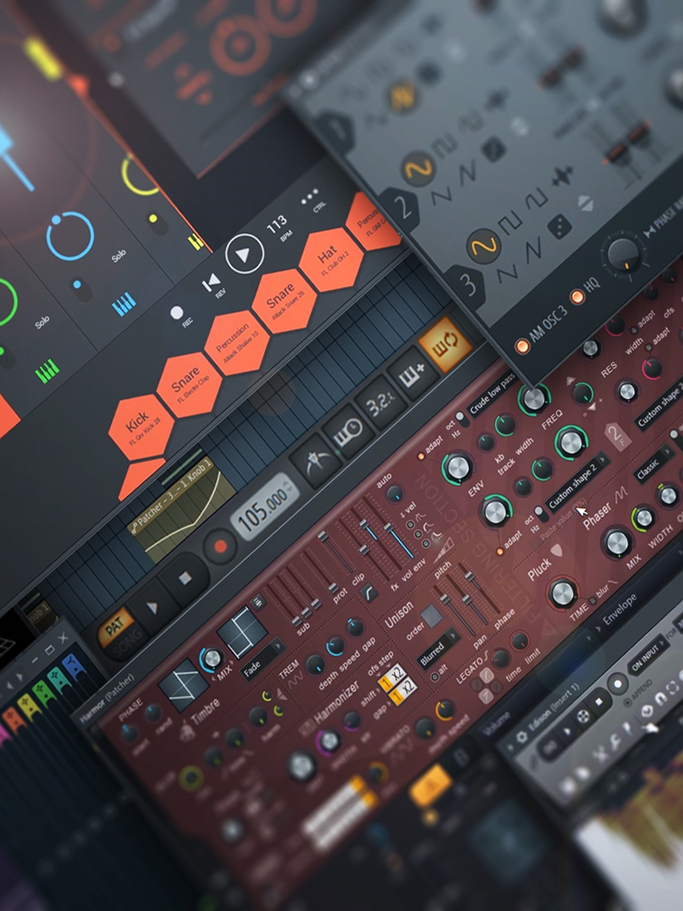

Multitracks Premium
Pistas separadas en formato WAV a 24-bits con click y guías de voz sincronizadas.
Ver Secuencias
Diseño sonoro avanzado y recreación instrumental desde cero. Creamos stems, parches y herramientas de audio profesionales con la máxima precisión técnica para tus shows en vivo y proyectos de estudio.
Ver Catálogo de Stems
Comprueba la pegada, mezcla y fidelidad de nuestro trabajo. En nuestro canal oficial compartimos las demostraciones audiovisuales de cada una de nuestras reconstrucciones instrumentales.
Visitar Canal Oficial
Pistas separadas en formato WAV a 24-bits con click y guías de voz sincronizadas.
Ver Secuencias
Librerías exclusivas para Kontakt, loops en DrumPads y presets para procesadores de guitarra.
Explorar Librerías
Muy pronto: beats para pop, hip hop, rap, trap, congregacionales y más géneros.
Ver Beats
Mezcla, mastering, arreglos, composición y el servicio "Crea tu música con nosotros".
Ver Servicios
Formación musical en línea. Clases personalizadas y contenido educativo en nuestro canal de YouTube.
Ver Cursos
Descargas libres de stems de prueba, utilidades VST y complementos para tu flujo de trabajo.
Acceder a Descargas
Servicio de réplicas instrumentales personalizadas. Tu track listo en 5 días hábiles.
Hacer una Solicitud